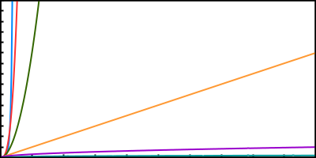

Exercises for Chapter #3 of A Common-Sense Guide To Data Structures and Algorithms
Get The Book!Inspect the following algorithm, and describe its time complexity in terms of Big O Notation:
In the below graph, six algorithms are depicted. The x axis represents the number of data elements, and the y axis represents how many steps the algorithm takes. By color, list the algorithms from fastest to slowest.
How would you describe the following algorithm in terms of Big O Notation: Looking up someone in a phone book by starting with the first name in the book and reading each subsequent name until you find the name you’re looking for.
How would you describe the following algorithm in terms of Big O Notation: Looking up someone in a phone book by starting with the middle of the book - and, when seeing that the name is higher or lower, jumping to the next halfway point, and so on until you find the correct name.
How would you describe the following algorithm in terms of Big O Notation: You’d like to use one laptop to clone its operating system to 15 other laptops, so you take the original laptop, and one by one, you use it to clone each other laptop.
How would you describe the following algorithm in terms of Big O Notation: You’d like to use one laptop to clone its operating system to 15 other laptops, so you take the first laptop and clone a second laptop. You then take the 2 completed laptops and clone 2 other laptops. You then take the 4 completed laptops to clone 4 other laptops. Finally, you take the 8 completed laptops and use them to clone 8 other laptops, so you end up with 16 completed laptops.